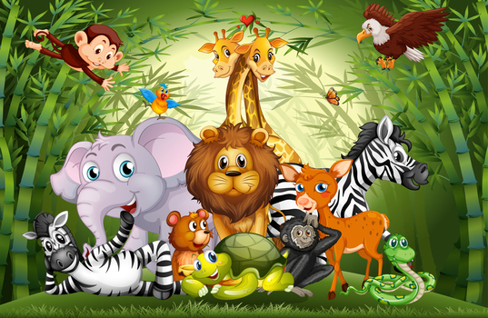

<p-multiSelect  [options]="tags" [(ngModel)]="selectedTags"
               defaultLabel="{{'createExpedition.searchTagsPlaceholder'|translate}}" class="p-fluid w-100"
               (onChange)="getAnimals()" optionLabel="name" display="chip"></p-multiSelect>
<ng-container *ngIf="animalService.loaded; else spinner">
  <p-treeTable [value]="categorizedAnimals$" [columns]="cols" selectionMode="checkbox" [(selection)]="selectedNodes"
               [scrollable]="true">

    <ng-template pTemplate="body" let-rowNode let-rowData="rowData" let-columns="columns">
      <tr>
        <td class="d-flex align-items-center" *ngFor="let col of columns; let i = index">
          <p-treeTableToggler [rowNode]="rowNode" *ngIf="i === 0"></p-treeTableToggler>
          
          
          <div *ngIf="rowData.category === undefined"
               class="flex-shrink-1">{{'animals.' + rowData[col.field].toLowerCase() | translate }}</div>
          <div *ngIf="rowData.category !== undefined" class="flex-shrink-1">{{(rowData["id"] | animal)?.name}}</div>
          <p-treeTableCheckbox class="ms-auto bd-highlight" [value]="rowNode" *ngIf="i === 0"></p-treeTableCheckbox>
        </td>
      </tr>
    </ng-template>
  </p-treeTable>
  <p-button icon="pi pi-plus" (click)="close()"
            styleClass=" w-100 p-button-success my-2 float-end"></p-button>
</ng-container>

<ng-template #spinner>
  <div class="d-flex align-items-center justify-content-center">
    <p-progressSpinner></p-progressSpinner>
  </div>
</ng-template>

